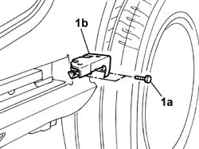
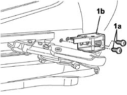

7020C12 Sliding side door end of travel CLIP, left or right - R.R.
- Path
- Procedures > 70 FITTINGS > 7020 LOAD CARRYING COMPARTMENT DOORS > 7020C sliding side door > 7020C12 Sliding side door end of travel CLIP, left or right - R.R.
- Kind
- repair procedure (removal / refitting; the operation number is the code)
- Applies to
- all engines; all production periods
- Interactive page
- https://sloeber94.github.io/elrnDB-fDbl/en/#/2585046
Applies to: all engines; all production periods
 Removing
Removing
 Refitting
RefittingOpen the sliding side door halfway.
1. Undo the fixing bolts (1a) and remove the device (1b).

Applies to: all engines; all production periods
Refitting
RemovingFit the end-of-travel stop and secure it tightening the bolts to the specified torque.
 | Fastening | Component | Ø | Value (daNm) |
|---|---|---|---|---|
- | Bolt | SLIDING SIDE. DOOR END OF TRAVEL CLIP | M6 | 1.2 |
Applies to: engines: 1.6 16v, 1.3 JTD 16V, 1.9 JTD 8V; all production periods; only with equipment: 7 seater
Removing
Refitting1. With the sliding side door open as far as necessary, unscrew bolts (1a) and remove the travel end stop (1b).

Applies to: engines: 1.6 16v, 1.3 JTD 16V, 1.9 JTD 8V; all production periods; only with equipment: 7 seater
Refitting
RemovingPosition the end travel stop in its seat and tighten the bolts.
Topics that link to this page (5)
- 7020C16 SLIDING AND SUPPORTING ELEMENTS for one sliding side door, left or right - R.R.
- 7020C24 Lower support and sliding DEVICE for one sliding side door, left or right - R.R.
- 7020C25 Sliding side door lower sliding GUIDE, left or right - R.R.
- 7020D50 device for holding sliding door open - r+r
- 7020D70 end travel stop of (1), lh or rh - replace